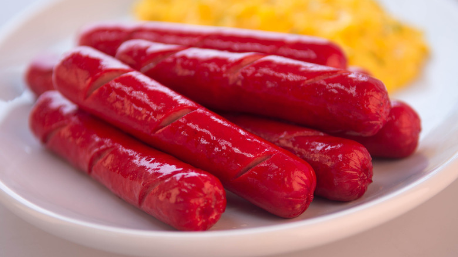

Juicy Hotdog

DESCRIPTION
A hot dog is a food consisting of a grilled or steamed sausage served in the slit of a partially sliced bun. Many people enjoy this snack even if it is unhealthy as it tastes delicious especially when it is "juicy".
Ingredients:
- Hotdogs
- Cooking oil
- Water
Steps:
- Cut the hotdogs diagonally to easily cook the hotdogs.
- Prepare the pan to use and add some water.
- Wait for the water to boil and then add the hotdogs.
- Leave the pan under high fire to continue the boil.
- Once the water has completely evaporated, add the oil.
- Only fry the hotdogs less than 5 minutes in order to avoid the toasting of its skin.
- You're done! If you want to serve this with extra juice, do not dry it with paper tissue.